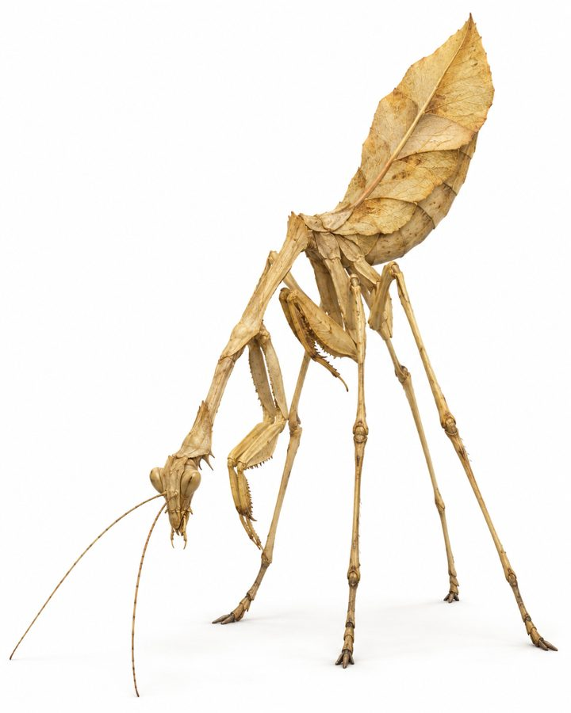
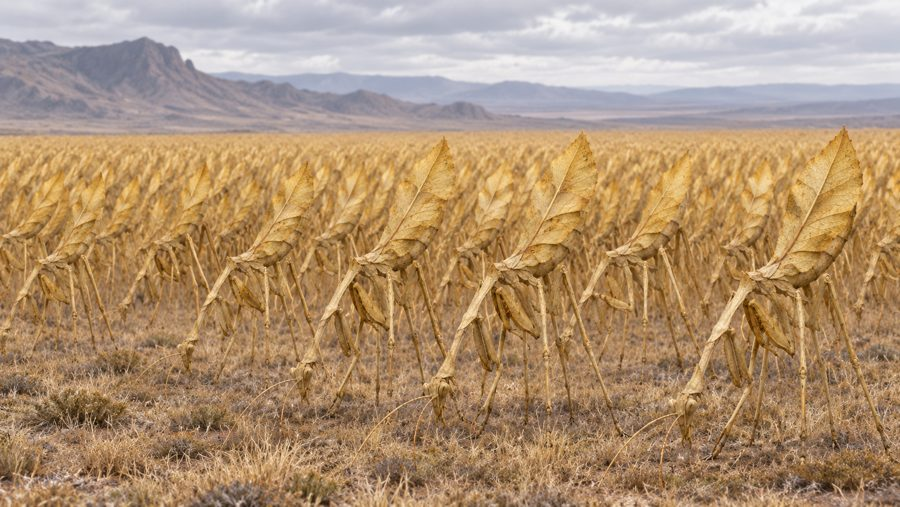

Zelnith
Large stick-mantis grazers that live in swaying herds, like fields of wheat that walk.
- Group
- Plains and agriculture
- Tags
- livestock herd grazer
- Range
- Ruqoravael is the primary range. Managed herds live in the farmland belt.
- Diet
- Vegetarian grazers. They use their forelegs as a feeding tool. Decided
- Form
- Stick-insect and mantis inspired, in massive herds. Canon
Behavior
- When threatened, the herd freezes together as one group and becomes nearly invisible as a field, not as individual animals. Canon
Uses
- After harvest or natural molting, they are ground into flour, the base of Ishphaenan bread. Canon
Notes
The compendium's regional descriptions are to be re-mapped for the almanac. No separate subspecies are needed.

